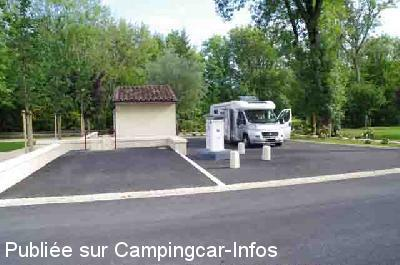
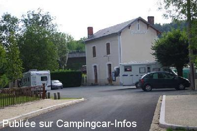
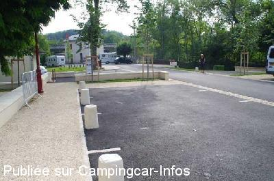

ASN = Aire de services avec stationnement nuit possible de :
CHATEAU L'EVÊQUE
(N° 466)
Accès/adresse :
Le Bourg
Place de La Fontaine
24460 CHATEAU L'EVÊQUE
Place de La Fontaine
24460 CHATEAU L'EVÊQUE
Latitude : (Nord) 45.24446° Décimaux ou 45° 14′ 40′′
Longitude : (Est) 0.68741° Décimaux ou 0° 41′ 14′′
Tarif : 2014
Stationnement gratuit
Services : 2 €
Électricité : 2 €
Jetons chez les commerçants
Type de borne : RACLET
Services :


Tous commerces en ville
Une affiche indique où trouver les jetons chez les commerçants
Autres informations :
Accessible de mai à octobre
9 emplacements
Tel mairie : +33(0)553 543 077

Le 21/08/2011 par domy

Le 21/08/2011 par domy

Le 21/08/2011 par domy
de
coala84
le 26/11/2014 :
bien ...propre ..pratique ..en hors saison c'est calme
bien ...propre ..pratique ..en hors saison c'est calme
de
will
le 01/05/2014 :
§ de passage avril 2014 9 places sous le pont derriere la gareau bruit des voitures sur le pont + du train et sans soleil
§ de passage avril 2014 9 places sous le pont derriere la gareau bruit des voitures sur le pont + du train et sans soleil
de
domy
le 21/08/2011 :
§
De passage le 27 juillet nous avons constaté que le parking a été refait et de 10 places (avant) il n'en reste que 2 le reste et pour les voitures
le parking de la gare peut servir au cas ou
sinon l'aire est trés bien malgrés le passage des trains le matin
§
De passage le 27 juillet nous avons constaté que le parking a été refait et de 10 places (avant) il n'en reste que 2 le reste et pour les voitures
le parking de la gare peut servir au cas ou
sinon l'aire est trés bien malgrés le passage des trains le matin
de
VALENTIN
le 15/02/2010 :
Pratique, bien situé, beau village, calme, bonne boulangerie... nous reviendrons
Pratique, bien situé, beau village, calme, bonne boulangerie... nous reviendrons
de
J. P. Bedouet
le 17/09/2007 :
Nuit du 15 au 16 septembre bien calme: nous étions le seul camping-car. Une indication sur la route principale serait utile.
Nuit du 15 au 16 septembre bien calme: nous étions le seul camping-car. Une indication sur la route principale serait utile.